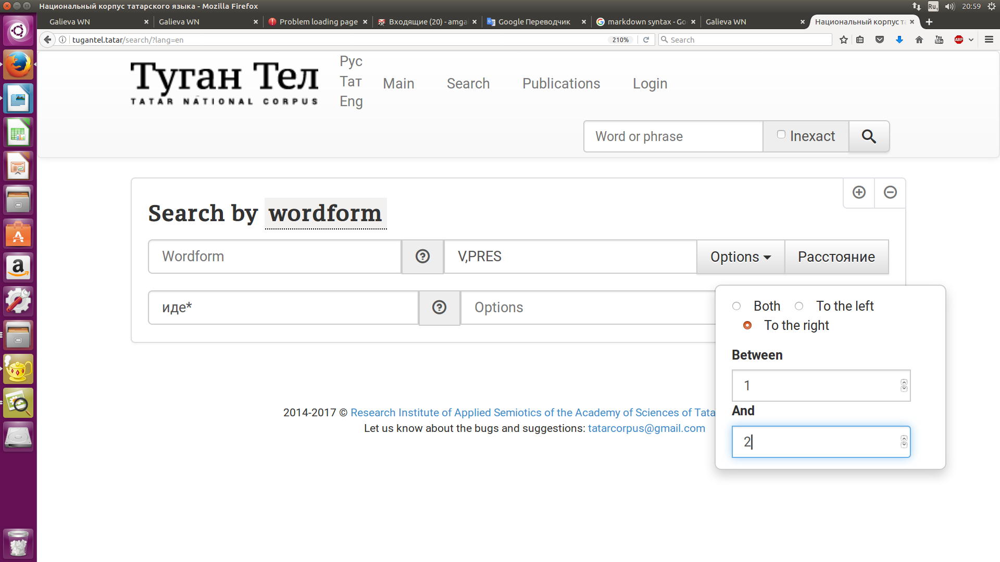

class: center, middle Tatarstan Academy of Sciences ##Development of annotation system for multi word constructions for Tatar National Corpus ###Ayrat Gatiatullin, **Alfiya Galieva,** Dzhavdet Suleymanov (amgalieva@gmail.com) --- ##Outline Introduction General information on Tatar National Corpus Conclusion References --- ## Introduction Quantitative and qualitative parameters of a corpus predetermine its applicability for various tasks and its user-friendliness. We present an approach to develop the system of corpus annotation of Tatar multiword constructions on example of analytical verb constructions. What is done? * preliminary inventory of Tatar multiword verb forms/constructions is compiled, * basic types of them are distinguished, * rules for extracting them are built, * the system for tagging these constructions in corpus is developed () --- | Tables | Are | Cool | | ------------- |:-------------:| -----:| | col 3 is | right-aligned | $1600 | | col 2 is | centered | $12 | | zebra stripes | are neat | $1 | --- ##'Tugan Tel' Tatar National Corpus (http:// http://tugantel.tatar/) - is designed by a team of computational linguists from Research Institute of Applied Semiotics of Tatar Academy of Sciences (www.ips.antat.ru); - is grammatically annotated; - now consists of written (mainly prosaic) texts; - the estimated size is 118 million words; - has a user-friendly interface and is accessed via Internet by any web browser. --- ##Grammatical annotation in TatNC Two main fields for the morphological information about a Tatar word-form: - part of speech characteristics of the stem; - set of morphological characteristics for each part of speech tag. The two-level morphological analyzer based on PC-KIMMO software is used. The system of grammatical annotation is based on Leipzig Glossing Rules (a number of tags, specific for the Tatar language, is added). --- ##The main page of the TatNC  --- ###Multiword constructions extracting An example of a complex query  --- ### Multiword constructions in Tatar Tatar corpus enables us to retrieve an exhaustive list of such items and to build their models. We built special rules for retrieving such units on - the structure of the components, - the order of components, - the possibility to insert some outer members. --- We distinguish 3 basic classes of Tatar analytical verb constructions - analytical tenses and moods (analytical verb forms): - analytical aspect forms; - analytical modal constructions. --- ### Examples of tagging grammatical verbal forms Morphological category || Structure ||Example || Translation ||Tag :---------------------:||:---------------:||:-------------- ---:||:---------------------:||:---------------------- Future-in-the-Past ||V+PCP_FUT(AcAK) +V_aux(ide)||kaytacak ide ||‘should go’ || FUTURE-PAST Pluperfect ||V+PCP_PS(-GAn) +V_aux(ide) ||kaytkan ide ||'had gone' ||Pl_PERF Optative ||V+COND(sA) +V_aux(иде) ||barsa ide ||‘would go’ ||OPT --- ###Examples of Tatar analytical (compound) verb forms/constructions containing auxiliary verbs of different types Morphological form || Translation || Morphological category ||Tag :---------------------:||:---------------:||:------------------------:||:---------------------:||:---------------------- Auxiliary verb - defective verb bargan ide ||had gone ||Pluperfect ||PL_PERF barsa ide ||would go || Optative ||OPT barsa ikän ||would go || Optative ||OPT barsa ikän ||would go || Optative ||OPT Auxiliary verb modifying verb eșläp aldı ||had been working ||Momentative ||MOMENT nacarlana bara ||continues to deteriorate||Continuative ||CONTIN eșläp kitte ||started to work ||Inchoative || INCHOAT Auxiliary verb modal verb eșli ala ||can work ||Possibilitive ||POSSIB eșlärgä yöri ||is going to work ||Prospective ||PROSP --- Examples of Tatar compound verbs derived from the verb eşläw ‘to work, to do’ Morphological form || Translation ||Structure || Morphological category ||Tag :---------------------:||:---------------:||:------------------------:||:-----------------------:||:---------------------- eșläp aldı ||had been working ||V+CONV(-ıp) V_aux(take)||Momentative ||MOMENT eșli bara ||сcontinues to work||V+PRES(-A) V_aux(go) ||Continuative ||CONTIN eșläp kitte ||started to work ||V+CONV(-ıp) V_aux(go away)||Inchoative ||INCHOAT eșläp taşladı ||have worked ||V+CONV(ıIp) V_aux(throw)||Momentative ||MOMENT eșli yazdı ||nearly worked ||V+PRES (-A) V_aux(‘nearly do sth.’)||Conative ||CONAT eșlise kaldı ||left to do ||V+DESID(-Ası) V_aux(stay) ||Proximative||PROX --- ###А. Manual (expert) classification - 500 contexts were taken; - 4 classes are distinguished. --- ##Description of classes ###Class 1: -lık affix - is attached to noun, adjective, numeral and other stems; - functions as a derivational affix; - forms new words - nouns of broad meaning (concrete nouns, abstract nouns and collective nouns). (1) .red[*ak*] 'white' +lık > .red[ *aklık*] 'whiteness' (2) .red[*narat*] 'pine-tree' +lık >.red[*naratlık*] 'pinery' (3) .red[*taş*] 'stone, rock' +lık > .red[*taşlık*] 'stony ground' (4) .red[*un*] 'ten' +lık > .red[*unlık*] 'ten-rouble note' --- ###Class 3: -lık affix - is attached to verbal stems; - functions as a derivational affix; - forms attributive words A typical meaning is potentiality, possibility, ability (inability in the negative form) to accomplish an action. (1) .red[*tab-ar-lık] azık* find-FUT_IND, PSBL food 'food that one may find' (2) .red[*bir-er-lek] äyber* give-FUT_IND, PSBL thing 'a thing that one may give (to somebody)' --- ## Conclusions and Future Work So presently the grammatical annotation system of Tatar National Corpus is being enriched by entering new tags for compound (analytical) forms and constructions, thus allowing for distinguishing between multi word lexical items, forms and constructions. The annotation system is mainly built on the tags of Leipzig Glossing rules (https://www.eva.mpg.de/lingua/pdf/Glossing-Rules.pdf) and those of the database of verbs developed by V. Plungian (httlp://www.mccme.ru/ling/verbum.htm). We distinguished and marked up analytical verb forms of two types: 1) analytical verb tenses 2) analytical constructions containing phase and modal verbs. --- ##References Adalı K., Dinc T., Gokırmak M, Eryigit G. (2016). Comprehensive Annotation of Multiword Expressions Turkish. // TurCLing 2016. Pp. 60-66. Ivan A. Sag, Timothy Baldwin, Francis Bond, Ann Copestake and Dan Flickinger: Multiword Expressions: A Pain in the Neck for NLP (2002) in: LECTURE NOTES IN COMPUTER SCIENCE, Vol. 2276, pp. 1-15. Mersinli Ü., Aksan Y. (2016). A Methodological Consideration for Multi-word Unit Extraction in Turkish. // TurCLing 2016. Pp. 27-31. Oflazer, K., & Say, B. (2004, July). Integrating morphology with multi-word expression processing in Turkish // Proceedings of the Workshop on Multiword Expressions: Integrating Processing (pp. 64-71). Association for Computational Linguistics. Suleymanov D., Nevzorova O., Gatiatullin A., Gilmullin R., Khakimov B. (2013). National corpus of the Tatar language “Tugan Tel”: Grammatical Annotation and Implementation // Procedia — Social and Behavioral Sciences 2013. Pp. 68-74. Tatar National Corpus. URL: http://tugantel.tatar Verbum. URL: httlp://www.mccme.ru/ling/verbum.htm --- #Thank you!